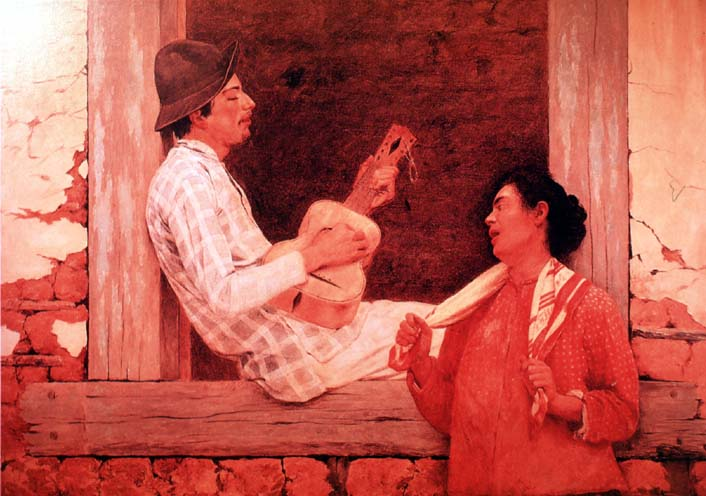

|
Body
|
|  |
| José Ferraz de Almeida Júnior, O violeiro |
Welcome to the guided tour "body", which is about to depart! Please use the "back" and "forward" buttons below to take you through this part of the exhibition. Click on the images if you want to find out more about an exhibit, or if you want to see a larger image of it.
Nation-states are, among many other things, about bodies and embodiment. To forge a people meant to select and canonize certain visual representations of the postures, poses and physiological traits of individuals and groups, while political power had to be personified in new ways after the demise of colonial rule and the apogee of caudillismo, in Argentina and Chile, and even more so in Brazil, where a monarchical aesthetic of embodying the state had to be exchanged for a new republican imagery following the coup of 1889. But to embody 'the people', 'the leaders' of past and present, the legends and fantasies of the community, also meant drawing the limits of the national body by embodying 'the other': 'race', 'vice', 'crime' all now become the object of an optic of surveillance that charts and classifies bodies and their traits into those who belong and those who do not. This tour will take us through some of these representations, and discuss to what extent they change in relation to the new forms of state power that are being implemented in Argentina, Brazil and Chile in the decade of 1880.
|
[ Back to index | Forward ] |